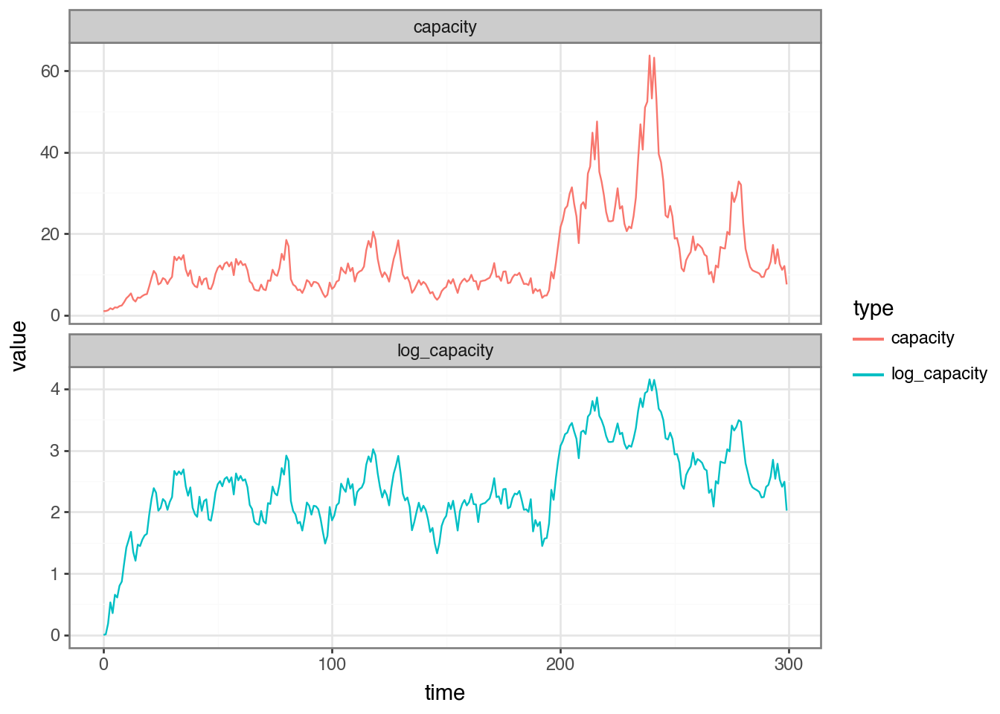
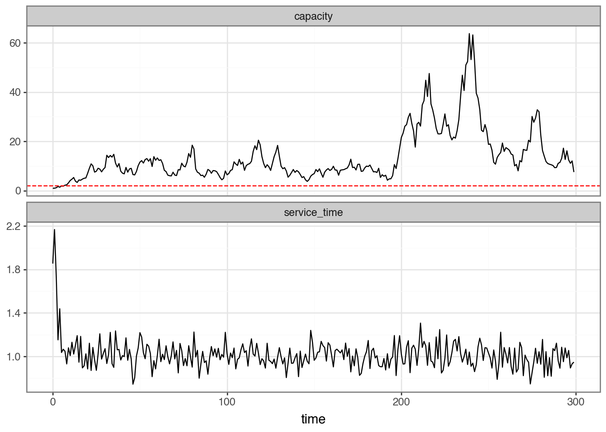
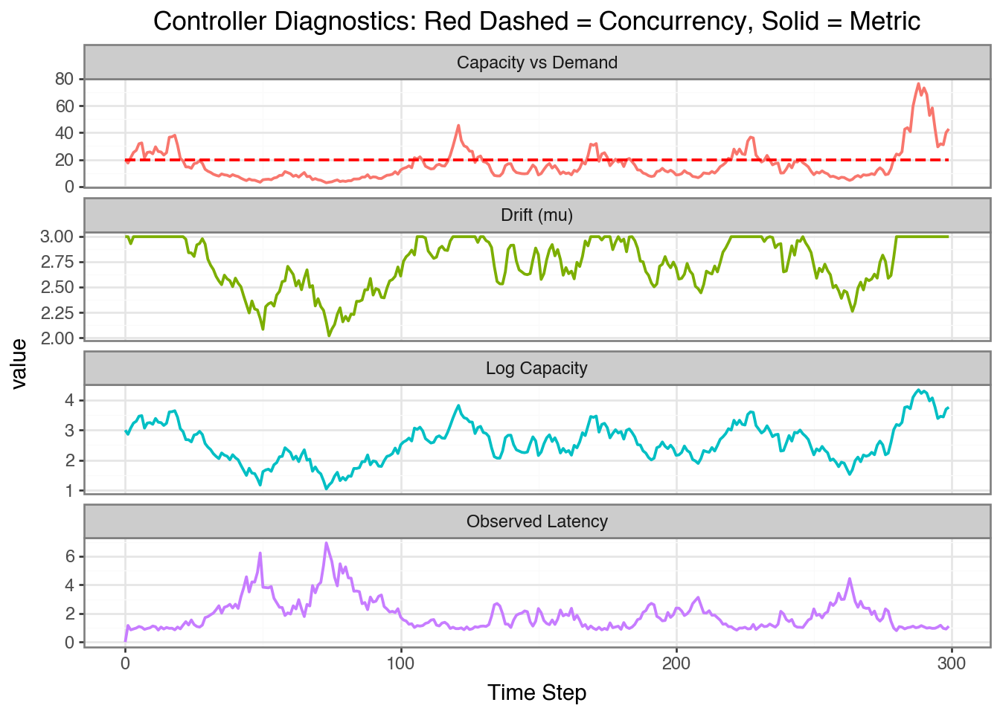

Recently, there has been a rise of “intelligent” LLMs (Large Language Models) being used to handle tasks which were previously difficult to automate or require a human in the loop due to the tasks requirements to understand natural language. Sometimes these models are being used where traditional machine learning would excel - for instance classification models or even when a deterministic script would suffice due to their ease of development using natural language. The downside is that these models are very compute intensive to train and hence provided “as-a-service” from large providers such as OpenAI, Anthropic and Google. As a result, to create moden AI driven applications we send requests to these third parties to power our own services. This introduces a problem of determining the capacity of a system we don’t directly control.
Applications sending requests to LLM service providers must understand the capacity of the service and apply rate-limiting in order to effectively run the application without interruption. Traditionally, this is done by applying a static concurrency limit specified ahead of time. However, this is not always the best strategy. We will explore different control schemes and understand how they apply in different circumstances by building a realistic generative model of capacity.
First I will introduce Little’s Law which is a fundamental principle in queueing theory that relates the average number of customers in a system to the average time they spend in the system and the arrival rate. It is named after John Little, who first stated the law in 1961.
\[
L = \lambda W
\]
\(L\): (Load/Nodes): The number of processors or users.
\(\lambda\): (Arrival rate): The number of requests per unit time.
\(W\): (Waiting time): The average time a request spends in the system.
Effectively, the load on the system increases as a function of both the arrival rate and the average time a request spends in the system.
To understand how we can maintain high throughput and low latency, we first need to understand what we can measure and control. We can measure successful requests and failed requests where we receive a 429 response, we can also measure the latency of the response. We can consider the latency of the response as a proxy for the load on the system. We can control the number of requests we send to the system.
Concurrency Primitive: A Semaphore
A semaphore can be used to limit the number of concurrent requests sent from a single coordinator. We set a max_concurrency limit and never deviate - in practice we might not hit the maximum throughput and if we’re paying for provisioned throughput then we’re leaving money on the table. Additionally, if we have a single semaphore per machine and other machines are sending requests to the same service how can we understand the current load on the service? We can’t without coordination which is expensive. This might lead to us capping the throughput per-machine to be much less than capacity, additionally, in a system with horizontal autoscaling, we might not know the number of machines sending requests to the service.
To implement the semaphore we use write a class with __enter__ and __exit__ dunder methods which allows us to use the CustomSemaphore as a context manager using with syntax. Then we can use threading primitives to determine when a slot is available and when it is not.
import threadingimport timeclass CustomSemaphore:def__init__(self, max_concurrency: int):self.max_concurrency = max_concurrencyself.remaining_slots = max_concurrencyself.condition = threading.Condition()def__enter__(self):withself.condition:whileself.remaining_slots ==0:print(f"[{threading.current_thread().name}] Waiting for a slot...")self.condition.wait() self.remaining_slots -=1print(f"[{threading.current_thread().name}] Acquired. Slots left: {self.remaining_slots}")returnselfdef__exit__(self, exc_type: type, exc_val: Exception, exc_tb):withself.condition:self.remaining_slots +=1print(f"[{threading.current_thread().name}] Released. Slots left: {self.remaining_slots}")self.condition.notify()def worker(semaphore: CustomSemaphore, task_id: int):with semaphore:print(f"Task {task_id} is working...") time.sleep(2) # Simulate a heavy task# Initialize with 2 available slotsmy_sem = CustomSemaphore(max_concurrency=2)threads = []# Spawn 5 threadsfor i inrange(5): t = threading.Thread(target=worker, args=(my_sem, i), name=f"Thread-{i}") threads.append(t) t.start()for t in threads: t.join()
[Thread-0] Acquired. Slots left: 1
Task 0 is working...
[Thread-1] Acquired. Slots left: 0
Task 1 is working...
[Thread-2] Waiting for a slot...
[Thread-3] Waiting for a slot...
[Thread-4] Waiting for a slot...
[Thread-0] Released. Slots left: 1
[Thread-1] Released. Slots left: 2
[Thread-2] Acquired. Slots left: 1
Task 2 is working...
[Thread-3] Acquired. Slots left: 0
Task 3 is working...
[Thread-3] Released. Slots left: 1
[Thread-2] Released. Slots left: 2
[Thread-4] Acquired. Slots left: 1
Task 4 is working...
[Thread-4] Released. Slots left: 2
If our third party had a maximum throughput (e.g. 100 requests per second) and our requests were short, then we could still exceed the maximum throughput and overload the system and receive a 429 response (Too Many Requests). If we receive a 429 response we should avoid sending more requests. We have effectively reached the limit of the system at that moment in time. Let’s consider a strategy to control the throughput of the system.
AIMD (Additive Increase Multiplicative Decrease)
AIMD probes for spare capacity by shortening the inter-arrival time by a small additive step \(\alpha\) after every request that arrives within the latency target, and backs off multiplicatively by factor \(\beta\) whenever a request exceeds the target.
where \(\tau\) is the latency target, \(\alpha\) is the additive increase step, and \(\beta \in (0, 1)\) is the multiplicative decrease factor.
We can now define a base class for the controller so we can re-use it when we define a simulation for the capacity of the system. The update method accepts parameters that we can measure and can update the interval and the rate (which is the inverse of the interval). In this case we are going to measure the latency of the response.
class AIMDController(Controller):""" Additive Increase / Multiplicative Decrease controller. After each completed request: - if latency <= target: decrease inter-arrival time by `alpha` (probe for higher throughput) - if latency > target: increase inter-arrival time by factor `1/beta` (back off to shed load) The inter-arrival time is clamped to [min_interval, max_interval]. """def__init__(self, initial_interval: float, target_latency: float, alpha: float=0.01, beta: float=0.5, min_interval: float=0.1, max_interval: float=10.0, ):self.interval = initial_intervalself.target_latency = target_latencyself.alpha = alphaself.beta = betaself.min_interval = min_intervalself.max_interval = max_intervaldef update(self, latency: float) ->None:if latency <=self.target_latency:self.interval =max(self.min_interval, self.interval -self.alpha)else:self.interval =min(self.max_interval, self.interval /self.beta)
Simulating a system with latent capacity
We know that the endpoint has a finite capacity, and after this capacity is reached we will receive a 429 response. However, we don’t know the capacity. We assume that the nodes calling the endpoint do not know the capacity - we assume there is no coordination between the nodes. As latent (true) capacity increases, we assume that the service time also increases as the endpoint becomes more saturated.
In order to simulate a system with unknown capacity we can use a state-space model. For some background on related state-space models see my previous posts on state space models here, here and here.
We can model the latent log-transformed capacity as a scalar mean-reverting process, a discrete-time Ornstein-Uhlenbeck (OU) process. This means the log-capacity wanders around a long-run mean \(\mu\) rather than drifting without bound.
Where \(\mu\) is the long-run mean of the capacity and \(\theta\) is the speed of mean reversion and \(\sigma\) is the volatility of the process. We can define a single step of the OU process as follows:
We can simulate the OU process by iterating the step function from an initial log-capacity equal to the long-run mean \(\mu\).

Figure 1: The Ornstein-Uhlenbeck Process for the log-capacity of the system, with mu = 1.0, theta = 0.05, and sigma = 0.2
The capacity process is mean-reverting to the long-run mean \(\mu\) so it stays within a reasonable range for realistic capacity. If we knew the system capacity we could easily set the inter-arrival time to target a desired utilisation. However, we can only measure the observed latency \(l_t\). We know that as capacity increases, the service time also increases but this is not a linear relationship and it’s also somewhat noisy.
where \(g(c_t, \theta)\) is a function of the capacity \(c_t\) and the base latency \(\ell_0\). \(v_t\) is the observation noise, assumed to be normally distributed with mean 0 and variance \(V\). If we consider \(k\) to be the applied concurrency, which we can control, then we can model the service time as a function of the capacity:
\[
g(c_t, \ell_0) = \begin{cases}
\ell_0 & k \leq c_t \\
\ell_0 \cdot \dfrac{k}{c_t} & k > c_t
\end{cases}
\]
So when demand \(k\) is at or below capacity \(c_t\), the service time is constant at the base latency \(\ell_0\). When demand exceeds capacity, latency grows proportionally with the overload ratio \(k/c_t > 1\). Because only the dimensionless ratio matters, the absolute scale of \(c_t\) and \(k\) does not need to match — what counts is whether demand is above or below capacity.
We can see in Figure 2, the applied concurrency is constant at 2.0 (plotted as the dashed red line) which is sometimes above the capacity of the system, the mean capacity is \(\exp(\mu) = \exp(1.0) \approx 2.718\) hence we can see the latency spiking when the applied concurrency is above the capacity.

Figure 2: Service Time and System Capacity where k = 2.0, ell_0 = 1.0, and sigma_v = 0.1, the latent capacity is the OU-process with mean mu = log(20.0), theta = 0.05, and sigma = 0.2
Applying the Controllers
In order to apply the controllers, we need the capacity of the system to be a function of the applied concurrency. We can do this by allowing the mean of the log-capacity to be a function of the applied concurrency.
where \(k\) is the applied concurrency and \(c_{t-1}\) is the capacity at time \(t-1\). This means that as the applied concurrency increases, the mean of the log-capacity decreases.
We can apply the controllers to the observed latency to control the inter-arrival time of the requests - this should prevent the system from reaching capacity and receiving a 429 response. Let’s try with each controller in turn. First we’ll try with a constant controller at a constant rate of 50 requests per second (way above the capacity of the system).
class ConstantController(Controller):def__init__(self, rate: float):super().__init__(initial_interval=1.0/ rate)controller = ConstantController(rate=50.0)
We can apply the controller as follows:
def _get_dynamic_drift(log_cap: float, concurrency: float, base_log_cap: float) ->float:"""Calculates the drift for the OU process based on current system stress.""" stress_factor =max(0, np.log(concurrency) - log_cap)return base_log_cap - (0.5* stress_factor)def _evolve_capacity(log_cap: float, drift: float, speed: float, volatility: float) ->tuple[float, float]: next_log_cap = ou_step(log_cap, drift, speed, volatility)return next_log_cap, np.exp(next_log_cap)def apply_controller( controller: Controller, ell_0: float, sigma_v: float, t_max: int, base_mean_capacity: float, capacity_mean_reversion_speed: float, capacity_volatility: float) ->tuple[np.ndarray, np.ndarray, np.ndarray, np.ndarray, np.ndarray]:"""Apply a controller to the observed latency to control the inter-arrival time of the requests.""" applied_concurrency_values = np.zeros(t_max) applied_concurrency_values[0] = controller.rate latency_values = np.zeros(t_max) capacity_values = np.zeros(t_max) capacity_values[0] = base_mean_capacity log_capacity_values = np.zeros(t_max) log_capacity_values[0] = np.log(base_mean_capacity) dynamic_mu = np.zeros(t_max) dynamic_mu[0] = np.log(base_mean_capacity)for t inrange(t_max -1):# 1. Determine current environmental drift based on load dynamic_mu[t+1] = _get_dynamic_drift( log_capacity_values[t], applied_concurrency_values[t], np.log(base_mean_capacity) )# 2. Advance the hidden state (Capacity) log_cap_next, cap_next = _evolve_capacity( log_capacity_values[t], dynamic_mu[t+1], capacity_mean_reversion_speed, capacity_volatility ) log_capacity_values[t+1] = log_cap_next capacity_values[t+1] = cap_next# 3. Generate Observation and Update Controller latency_values[t+1] = observe(cap_next, applied_concurrency_values[t], ell_0, sigma_v) controller.update(latency_values[t+1]) applied_concurrency_values[t+1] = controller.ratereturn applied_concurrency_values, latency_values, capacity_values, log_capacity_values, dynamic_mu
Figure 3: Apply the Constant Controller with a rate of 50 rps
With the constant controller and the applied concurrency at 50 rps we saturate the system - the dynamic mean decreases as a function of the applied concurrency which in turn decreases the capacity. Since the capacity is (typically) less than the applied concurrency the latency increases meaning these requests will not be fulfilled.
We can calculate the throughput as the number of successful requests per second. We can define the total number of successful requests as the number of requests where the latency is less than a threshold, say 1.5 seconds. We can then calculate the throughtput as the number of successful requests divided the total time (300 seconds).
We can try instead with a lower constant rate of 20 rps instead (right around the capacity of the system). There are still moments when the system is saturated and the latency is pinned at the maximum latency of 1 second - we want to be able to react to moments when the system is saturated and reduce the applied concurrency.

Figure 4: We apply the Constant Controller with a rate of 20 rps
Successful Requests
Failed Requests
Throughput (req/s)
0
2740.0
3260.0
9.13
Next we’ll try with the AIMD Controller. When the latency is larger than the target latency threshold (1.25), we reduce the inter-arrival time by \(\alpha\). When the latency is less than the target latency threshold, we increase the inter-arrival time by a factor of \(\beta\).
Figure 5: The AIMD Controller with an initial interval of 1.0 seconds and a target latency of 1.25 seconds, alpha = 0.02, beta = 0.75, min_interval = 0.025, max_interval = 1.0
Successful Requests
Failed Requests
Throughput (req/s)
0
4471.0
1582.0
14.9
The AIMD controller is a little tricky to set the parameters. We could consider using an optimization algorithm to explore the parameter space, but that’s out of scope for this blog post.
Throughput Comparison
To compare the algorithms fairly we re-run each controller with the same random seed and simulation parameters. Requests whose observed latency exceeds the threshold (\(\tau = 1.5\) s) are treated as rate-limited — the service has rejected or heavily delayed them, so they do not contribute to useful throughput. This makes the effective throughput of controllers that frequently breach the threshold much lower than their nominal rate suggests.
Metrics computed:
Time elapsed – total simulated time \(t_{\max}\) (seconds).
Successful requests – number of requests where latency \(\leq 1.5\) seconds.
Effective throughput – successful requests / time elapsed (req/s).
% rate-limited – the proportion of requests where the latency exceeded 1.5 seconds.
The table highlights the cost of ignoring rate-limiting signals. The constant controller firing at 50 req/s has most requests rejected ends up with a lower effective throughput than one running at 20 req/s (which happens to be the actual long-run mean capacity of the system). AIMD keeps the rate-limited fraction low and therefore achieves better effective throughput despite a lower nominal rate.
Conclusion
AIMD is a useful controller to apply to distributed systems where the underlying capacity is not known. We have simulated a system with a latent capacity and applied the controllers to the observed latency to control the inter-arrival time of the requests. We have seen that with a constant controller we either under-utilise the system or over-utilise the system. The AIMD controller is able to achieve a higher effective throughput by monitoring the latency and adjusting the inter-arrival time accordingly.
Citation
BibTeX citation:
@online{law2026,
author = {Law, Jonny},
title = {Handling {Concurrency}},
date = {2026-05-08},
langid = {en}
}
![]()